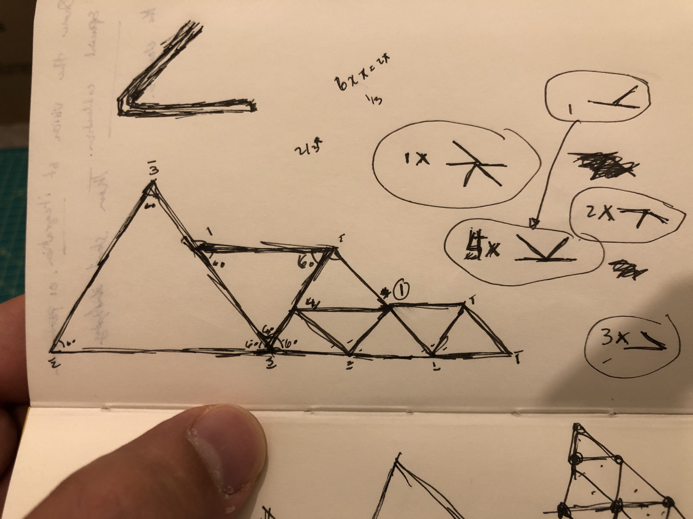
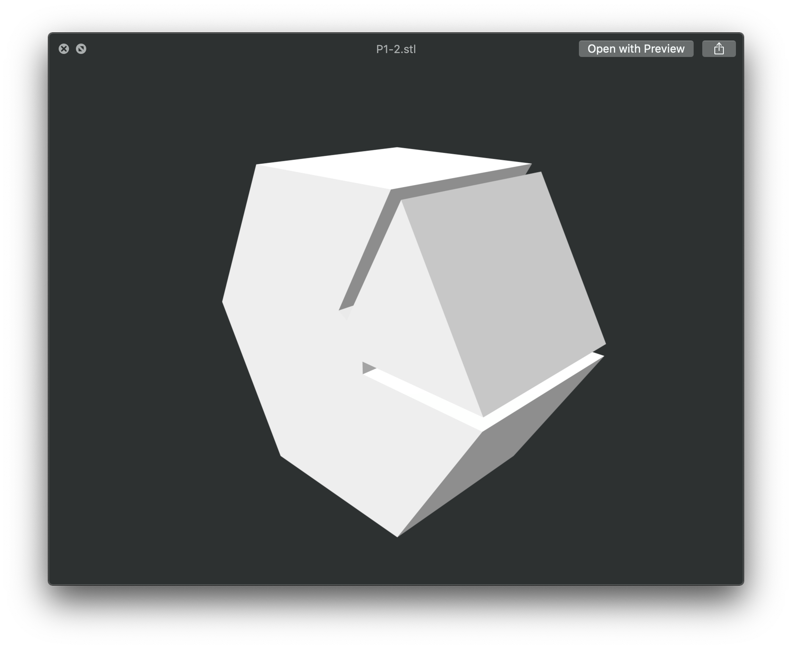
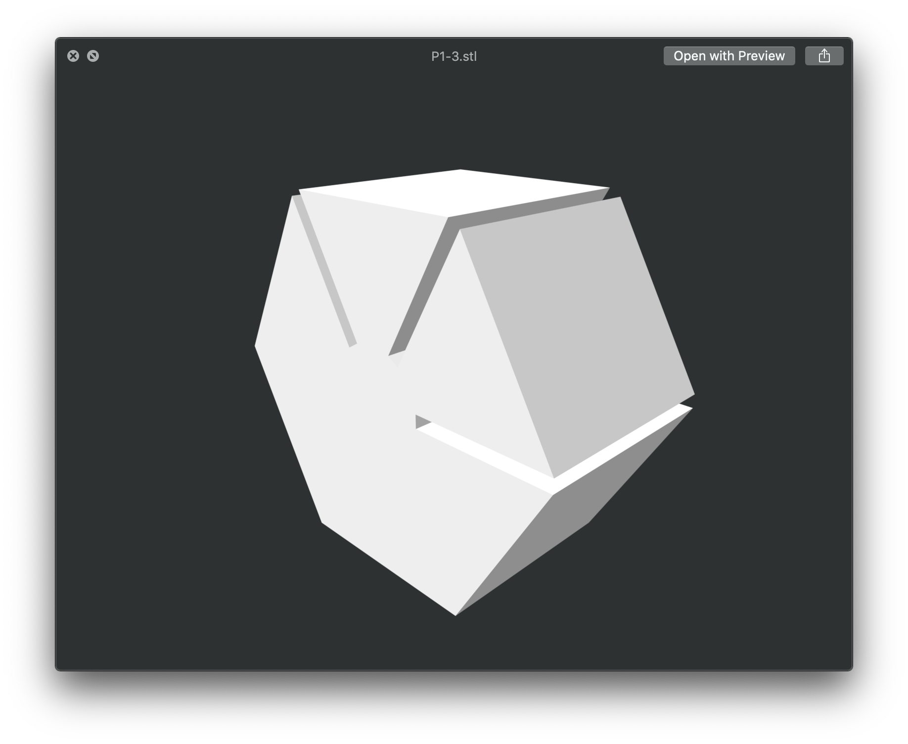
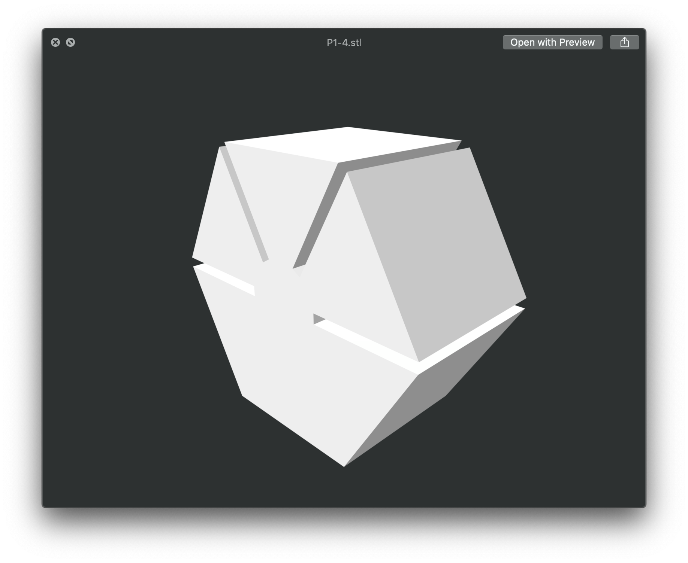
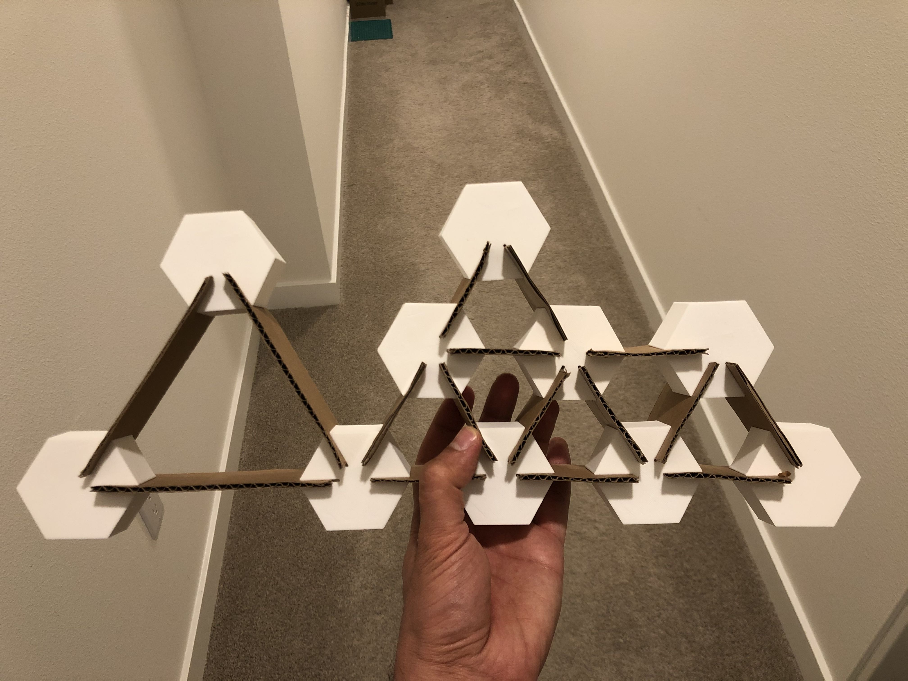
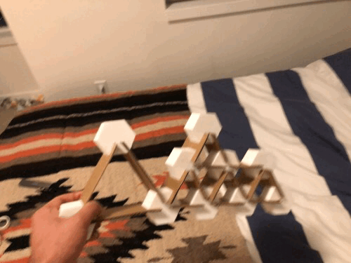
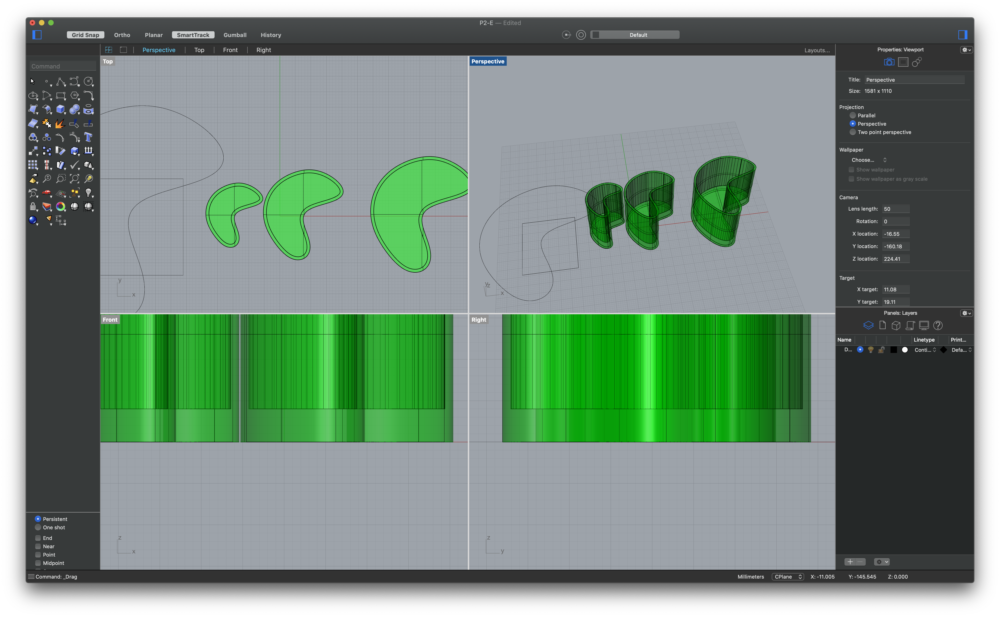
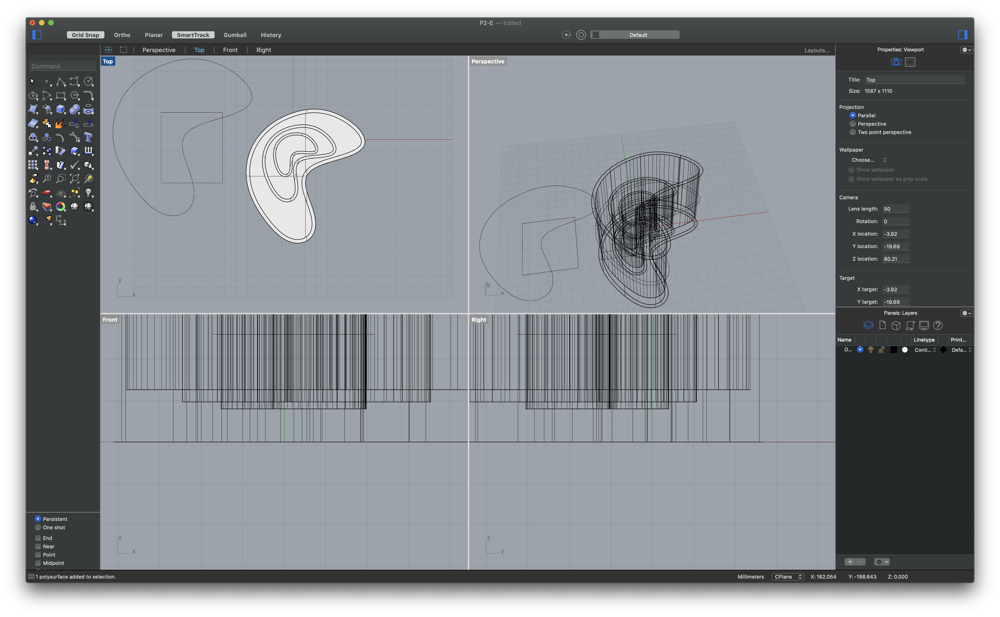
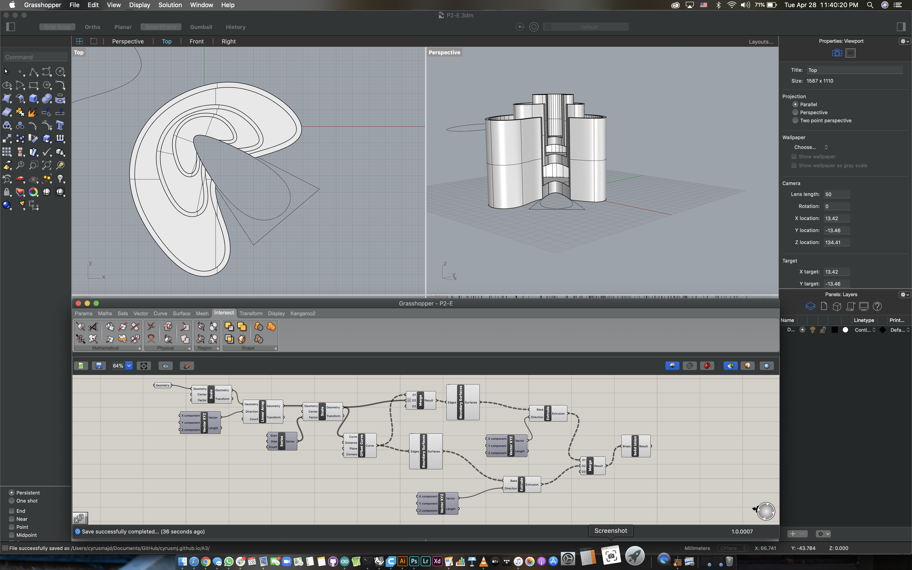
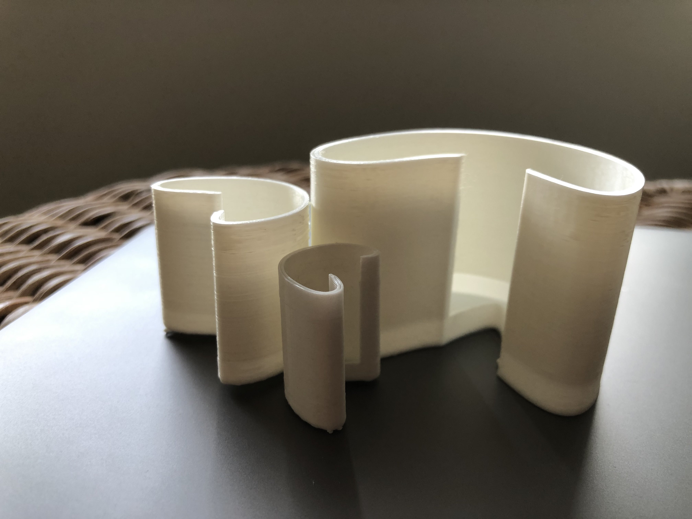

1) Make a construction kit that uses 10 clips (designed in Grasshopper) to connect pieces of cardboard in grasshopper
For this task I wanted to build something that I can turn into a shelving unit later on, and I wanted the clips to be part of the design. So I started by sketching the image below:

Once I was happy with my drawing, I started identifying how the model needs to be shaped. I essentially needed to create clips that allowing me to connect pieces using multiple 60 degree angles.
From there, I created this Grasshopper model here that resulted directly in this .3dm file, and looked like this .stl screenshot below:



By doing so I was able to put this final image together that can be shaken with no impact (gcodes!)


2) Making nested objects using Grasshopper!
I began this section by creating the following in Grasshopper using Jasper’s tutorials

Then, continued by moving the items around in Rhino (.3dm ) file since achieving it in grasshopper would’ve been very difficult to get to this:

From here, I cut through the model by grabbing a boolean difference using a rectangle turned into cruves in order to create a “look out view” (.stl & gcodes!):

